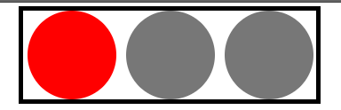

原文出处:本文由博客园博主日天达人提供。
原文连接:https://www.cnblogs.com/98WDJ/p/10685559.html
原文连接:https://www.cnblogs.com/98WDJ/p/10685559.html
HTML代码：
在一个div容器内，设置3个span
<body>
<div id="i1">
<span class="light red_light"></span>
<span class="light yellow_light"></span>
<span class="light green_light"></span>
</div>CSS代码：
<style>
.red_light {
width: 200px;
height: 200px;
border-radius: 50%;
margin-left: 10px;
display: inline-block;
background-color: red;
}
.yellow_light {
width: 200px;
height: 200px;
border-radius: 50%;
margin-left: 10px;
display: inline-block;
background-color: yellow;
}
.green_light {
width: 200px;
height: 200px;
border-radius: 50%;
margin-left: 10px;
display: inline-block;
background-color: green;
}
.light {
width: 200px;
height: 200px;
background-color: #777777;
border-radius: 50%;
margin-left: 10px;
display: inline-block;
}
#i1 {
width: 660px;
height: 200px;
margin: 0 auto;
border: black 10px solid;
}
</style>在css中，light在后面，所以后面变换颜色通过的是 classList.toggle('light')
此时的效果
scipt代码：


<script>
function l() {
r_l()//红灯亮
setTimeout(y_l, 1000);//黄灯一秒后亮
setTimeout(r_l, 1000);//黄灯亮的同时关闭红灯
setTimeout(g_l, 2000);//绿灯两秒后亮
setTimeout(y_l, 2000);//绿灯亮，黄灯熄
setTimeout(g_l, 3000);//三秒后，红灯熄
}
function r_l() {
//获取红灯
let r = document.getElementsByClassName('red_light')[0];
//toggle函数，如果有该属性，则去除，没有该属性，则添加
r.classList.toggle('light')
}
function g_l() {
//同上
let r = document.getElementsByClassName('green_light')[0];
r.classList.toggle('light')
}
function y_l() {
//同上
let r = document.getElementsByClassName('yellow_light')[0];
r.classList.toggle('light')
}
//红灯10秒，黄灯2秒，绿灯10秒
l(); //先执行函数
window.onload = function () {
t1 = setInterval(l, 3000)//每隔三秒重复执行函数
};
//每隔三秒的时间是因为每个灯各闪一秒，如果改变了灯的持续时间，循环时间也要修改
</script>
效果图：
